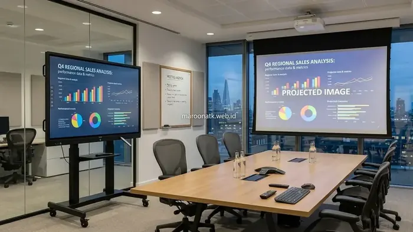

Memahami Perbedaan Smart Board dan Proyektor untuk Ruang Rapat Kantor
Jawaban singkat: Smart board atau Interactive Flat Panel memiliki investasi awal yang umumnya lebih tinggi dibanding proyektor biasa, tetapi menawarkan fungsi tampilan dan interaksi yang lebih terintegrasi. Proyektor dapat memiliki biaya awal lebih rendah, namun membutuhkan perangkat pendukung seperti layar dan sistem proyeksi. Untuk kantor, pilihan sebaiknya ditentukan berdasarkan kebutuhan penggunaan, frekuensi meeting, kolaborasi, instalasi, dan biaya penggunaan jangka panjang.
Dalam perencanaan fasilitas ruang rapat perusahaan, pertanyaan mengenai perbedaan smart board dan proyektor sering kali menjadi perdebatan hangat antara divisi General Affairs (GA), IT, dan Procurement. Di satu sisi, proyektor telah lama menjadi standar display presentasi kantor. Di sisi lain, kehadiran Interactive Flat Panel (smart board) menawarkan lompatan teknologi interaktif yang mengubah cara tim berdiskusi dan mengambil keputusan bisnis.
Namun, keraguan yang kerap muncul di meja purchasing adalah: apakah investasi awal yang lebih tinggi pada smart board sebanding dengan nilai manfaat jangka panjang bagi operasional kantor? Untuk menjawab pertanyaan tersebut, evaluasi tidak boleh hanya terpaku pada nominal pembelian di katalog, melainkan harus meninjau totalitas fungsi, pengalaman pengguna, hingga biaya pemeliharaan berkelanjutan.
Perbandingan Komprehensif Aspek Teknis dan Penggunaan
Berikut adalah perbandingan mendalam antara kedua teknologi display presentasi tersebut berdasarkan kebutuhan operasional kantor:
1. Kualitas Visual dan Ketergantungan Cahaya Ruangan
Proyektor tradisional mengandalkan pantulan cahaya lampu ke layar kain (screen). Akibatnya, kualitas kontras dan saturasi warna sangat rentan memudar apabila lampu ruangan menyala atau terdapat cahaya matahari dari jendela. Kondisi ruang rapat yang harus digelapkan sering kali membuat peserta rapat merasa mengantuk dan kesulitan mencatat.
Sebaliknya, Smart Board mengadopsi panel LED beresolusi 4K Ultra HD dengan lapisan anti-glare. Tingkat kecerahan tinggi memastikan materi spreadsheet, diagram keuangan, dan grafik performa bisnis terbaca dengan sangat tajam dari sudut pandang mana pun, bahkan di ruang rapat yang bermandikan cahaya alami.
2. Interaksi Layar Sentuh dan Digital Whiteboard
Proyektor konvensional bersifat satu arah (hanya menampilkan visual dari satu laptop). Jika presenter ingin memberi penekanan atau mencoret poin penting, mereka harus berdiri di depan laptop atau menggunakan pointer laser yang terbatas.
Smart Board dilengkapi teknologi layar sentuh multi-titik (multi-touch) yang memungkinkan presenter menulis, menggambar diagram alur, menggeser elemen presentasi, dan menghapus catatan langsung di layar menggunakan stylus maupun jari. Seluruh coretan dan hasil brainstorming dapat langsung disimpan ke dalam file PDF atau dibagikan ke seluruh peserta rapat melalui pemindaian QR code.

Perbandingan fungsional antara layar sentuh interaktif terintegrasi dan sistem proyeksi dengan layar kain eksternal.
3. Kerapian Instalasi dan Fleksibilitas Penempatan
Instalasi sistem proyektor memerlukan perencanaan yang cukup rumit: bracket plafon, penarikan kabel HDMI panjang melalui dinding atau langit-langit, instalasi layar tarik (motorized screen), hingga pemasangan speaker eksternal tambahan. Risiko kabel longgar atau tersandung sering menjadi kendala teknis menjelang rapat direksi dimulai.
Smart Board merupakan perangkat all-in-one yang telah memadukan layar display, komputer internal, speaker stereo, mikrofon, dan kamera video conference. Perangkat ini dapat dipasang rapi pada dinding menggunakan wall-mount atau ditempatkan pada mobile trolley stand beroda, sehingga dapat dipindahkan antar ruang rapat secara fleksibel.
Tabel Komparasi: Smart Board vs Proyektor Konvensional
Gunakan tabel perbandingan berikut untuk mempermudah perumusan justifikasi pengadaan teknologi display kantor:
| Faktor Evaluasi | Proyektor Biasa | Smart Board (IFP) | Dampak pada Produktivitas Kantor |
|---|---|---|---|
| Investasi Awal | Lebih terjangkau untuk unit dasar | Investasi awal lebih tinggi | Penyesuaian terhadap alokasi anggaran belanja modal awal |
| Kebutuhan Aksesori | Butuh screen, kabel panjang, speaker eksternal | All-in-one terintegrasi (layar, audio, OS) | Ruang rapat jauh lebih rapi dan bebas kabel berserakan |
| Interaktivitas | Satu arah (tampilan visual pasif) | Layar sentuh interaktif & digital whiteboard | Diskusi lebih dinamis, catatan rapat langsung tersimpan |
| Pencahayaan Ruang | Ruangan harus digelapkan agar gambar jelas | Tetap jernih di ruangan terang (anti-glare 4K) | Peserta rapat tetap fokus dan mudah membaca dokumen |
| Biaya Perawatan | Perlu ganti lampu berkala & pembersihan optik | Minim perawatan rutin (panel LED awet) | Mengurangi downtime operasional akibat lampu mati tiba-tiba |
Analisis Total Cost of Ownership (TCO) dalam Pengadaan Kantor
Bagi tim procurement, konsep Total Cost of Ownership (TCO) mengajarkan bahwa biaya suatu aset tidak hanya dihitung dari harga beli di awal, melainkan akumulasi seluruh biaya operasional selama masa pakai aset tersebut:
- Waktu Setup Meeting: Rapat yang tertunda 10–15 menit hanya untuk menghubungkan kabel HDMI proyektor menimbulkan inefisiensi waktu kerja ratusan jam per tahun bagi puluhan staf. Fitur wireless sharing pada smart board memungkinkan presentasi dimulai dalam hitungan detik.
- Kompatibilitas Hybrid Meeting: Di era kerja hybrid, kemampuan Smart Board untuk menjalankan aplikasi video conference secara mandiri mengeliminasi kebutuhan pembelian perangkat audio-video conference terpisah bernilai mahal.
- Daya Tahan Fisik: Layar Smart Board yang dilindungi tempered glass memiliki ketahanan terhadap goresan dan benturan ringan, menjamin aset operasional tetap prima selama bertahun-tahun.
Konsultasi Kebutuhan Display Ruang Rapat Kantor Anda
Dapatkan Jadwal Demo Unit, Rekomendasi Ukuran Layar & Penawaran Resmi
Diskusikan kebutuhan Interactive Flat Panel dan teknologi presentasi kantor Anda bersama tim konsultan B2B MAROON ATK.
Kesimpulan: Menentukan Pilihan Tepat Sesuai Kebutuhan Organisasi
Rangkuman Poin Keputusan
Keputusan memilih antara proyektor dan smart board harus diselaraskan dengan fungsi ruangan dan pola kolaborasi perusahaan:
- Pilih Proyektor jika kebutuhan ruang hanya untuk presentasi satu arah berdurasi singkat dengan anggaran modal awal yang sangat ketat.
- Pilih Smart Board (IFP) jika perusahaan mengutamakan kolaborasi dinamis, sesi brainstorming aktif, integrasi hybrid meeting tanpa jeda, serta estetika ruang rapat modern yang rapi.
Pertanyaan Umum (FAQ) Perbedaan Smart Board dan Proyektor
Smart board atau Interactive Flat Panel merupakan layar sentuh mandiri resolusi 4K dengan sistem komputer, audio, dan papan tulis digital terintegrasi tanpa bayangan. Sementara proyektor biasa hanya memancarkan gambar ke layar kain eksternal dan membutuhkan ruangan redup serta kabel penghubung tambahan.
Sangat cocok. Smart board mendukung presentasi interaktif, anotasi langsung di layar, video conference hybrid meeting tanpa lag, serta kemudahan berbagi layar nirkabel dari smartphone, tablet, maupun laptop peserta rapat.
Meskipun investasi awal smart board lebih tinggi, biaya pemeliharaan jangka panjang cenderung lebih efisien karena tidak memerlukan penggantian lampu proyektor berkala, bebas pembersihan filter optik, serta konsumsi listrik yang lebih stabil.
Tidak perlu. Smart board menggunakan panel LED berintensitas cahaya tinggi dengan lapisan anti-glare, sehingga tampilan visual materi rapat tetap tajam dan jelas meski lampu ruangan menyala terang.

Arby Ardiansyah
Praktisi pengadaan B2B berpengalaman dalam tata kelola fasilitas kantor modern, standardisasi perangkat teknologi presentasi, dan optimasi efisiensi pengadaan di Indonesia.